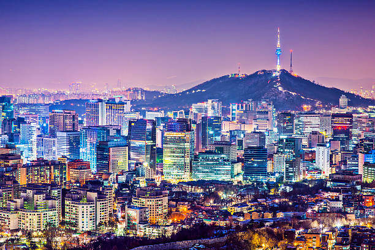

Ciudades
Elige una ciudad

Seúl
Historia, cultura y entretenimiento

Busan
Playas, gastronomía y paisajes

Jeju
Naturaleza, cultura y actividades
Explora los mejores destinos turísticos de Corea del Sur.

Historia, cultura y entretenimiento
Playas, gastronomía y paisajes
Naturaleza, cultura y actividades
Todavía no tienes favoritos.
Guarda tus destinos favoritos para verlos aquí.

Historia

Entretenimiento

Naturaleza

Cultura

Naturaleza

Naturaleza

Historia
El Palacio Gyeongbokgung es uno de los lugares históricos más representativos de Seúl. Es conocido por su arquitectura tradicional y por formar parte de la historia de la dinastía Joseon.
Ubicación: Seúl, Corea del Sur
Historia

Lotte World es un complejo de entretenimiento ubicado en Seúl que cuenta con un parque de atracciones, espacios interiores y exteriores. Es un lugar pensado para disfrutar de diferentes atracciones y actividades recreativas.
Ubicación: Seúl, Corea del Sur

Naturaleza
Haeundae Beach es uno de los lugares turísticos más conocidos de Busan. Se caracteriza por su amplia zona de arena, sus paisajes costeros y las actividades que se pueden disfrutar alrededor de la playa.
Ubicación: Busan, Corea del Sur
Cultura

Haedong Yonggungsa es un templo budista ubicado junto al mar en Busan. Su ubicación frente a la costa y su arquitectura tradicional lo convierten en un lugar destacado para conocer parte de la cultura y el patrimonio de Corea del Sur.
Ubicación: Busan, Corea del Sur

Naturaleza
Seongsan Ilchulbong es una formación volcánica ubicada en la isla de Jeju. Es conocida por sus paisajes naturales y por las vistas que ofrece desde su cima.
Ubicación: Jeju, Corea del Sur
Naturaleza

Cheonjiyeon Waterfall es una cascada ubicada en la isla de Jeju, rodeada de vegetación y paisajes naturales. Es un lugar turístico donde se puede disfrutar del entorno natural de la isla.
Ubicación: Jeju, Corea del Sur